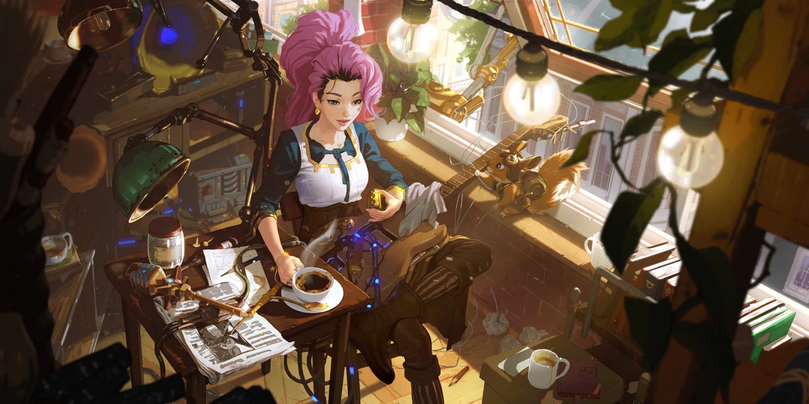
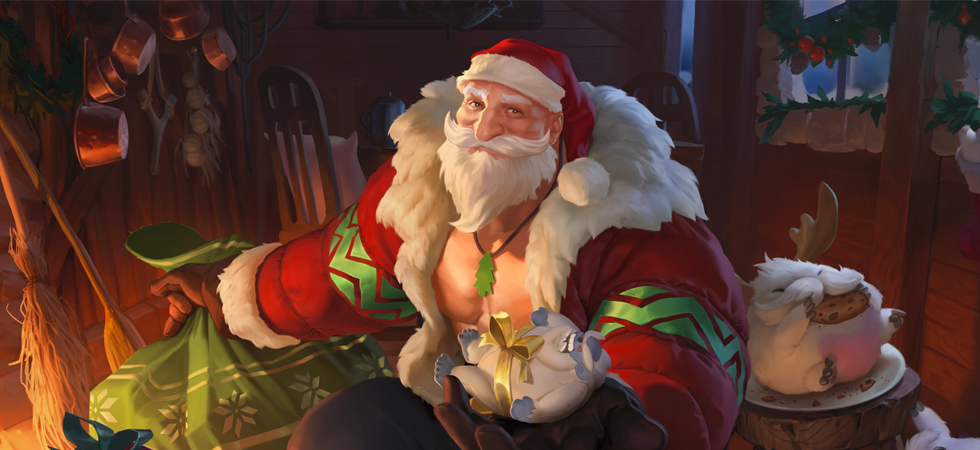
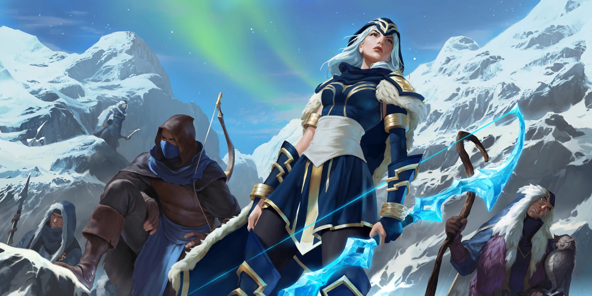
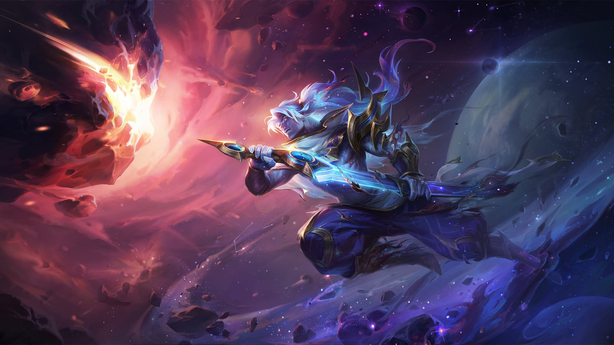
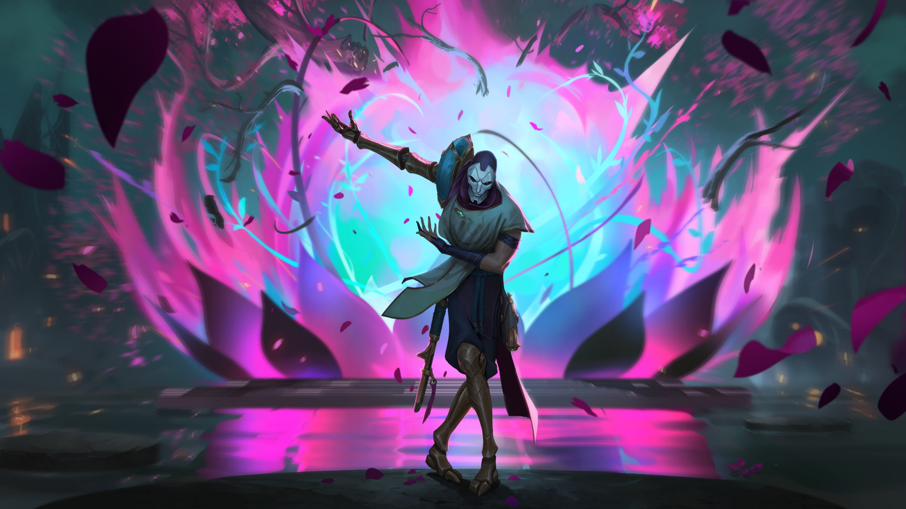
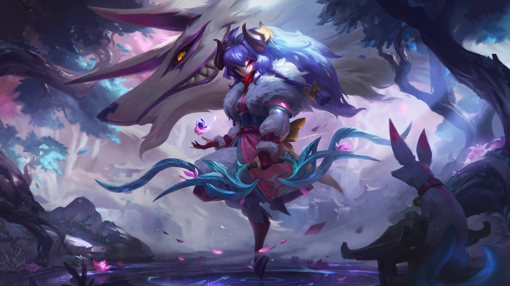

Historia de personajes en Runaterra
Historia de Seraphine en Runaterra

Primeros años:
Seraphine nace en Zaun, la ciudad subterránea bajo Piltover, conocida por su contaminación y sus
experimentos mágicos ilegales.
Ella posee una peculiaridad: escucha constantemente las emociones de todos a su alrededor como
melodías, lo que la agobia y confunde.
Seraphine se refugia en la música, que le ayuda a canalizar las emociones y conectar con la
gente.
Descubre por casualidad un cristal misterioso que amplifica sus habilidades musicales y le
permite proyectar las emociones que siente.
Ascenso a la fama:
Seraphine usa su don para crear música conmovedora que resuena en toda Piltover y Zaun, uniendo a
la gente de ambas ciudades.
Se convierte en una celebridad, amada por todos por su música edificante y su mensaje de unidad.
Sin embargo, la fuente de su poder sigue siendo un misterio, y algunos sospechan que podría ser
peligrosa.
Revelaciones y conflictos:
Seraphine descubre que el cristal proviene de un ser antiguo y poderoso conocido como "Armonía".
Armonía se alimenta de las emociones de la gente, y Seraphine es un poderoso conducto para su
influencia.
Seraphine lucha con la decisión de seguir usando el poder de Armonía para el bien, sabiendo los
riesgos potenciales.
Se enfrenta a diferentes grupos que la ven como una amenaza, desde aquellos que temen a Armonía
hasta aquellos que se oponen a su influencia en la gente.
Historia de Braum

La historia de Braum en Runaterra:
Braum, conocido como el Corazón del Hielo, es un héroe legendario del Fréljord, famoso por su
fuerza descomunal, su corazón bondadoso y su inquebrantable voluntad de proteger a los más
débiles.
Origen humilde:
Braum nació en una pequeña aldea al norte del Fuerte Helado. Su infancia estuvo marcada por la
pobreza y la dureza del clima gélido,
pero también por el amor y la unión de su familia. Desde pequeño, Braum se destacó por su fuerza
y su valentía, siempre dispuesto a ayudar a los demás.
El llamado del corazón:
Un día, mientras cazaba en las montañas, Braum encontró una puerta mágica sellada. Al tocarla,
una voz ancestral le habló,
encomendándole la misión de proteger al Fréljord y luchar por la paz. La puerta se transformó en
un poderoso escudo, símbolo de su nuevo propósito.
Un protector incansable:
Desde entonces, Braum recorre el gélido norte como un protector errante, siempre dispuesto
a ayudar a los necesitados. Se enfrenta a las bestias salvajes, a los bandidos despiadados y a
las fuerzas que amenazan la paz del Fréljord.
Historia de Ashe

La historia de Ashe en Runaterra:
"Gloria a Volibear, la Bestia de las Mil Heridas. Dale a mi gente la resistencia de tu naturaleza
salvaje y la furia de tu tormenta."
"Alabado seas Ornn, el Portador del Fuego. Te pido sabiduría, Primer Constructor y Señor de la
Forja."
"Alabada seas Anivia, la Portadora del Hielo. Que podamos sentir la venida del cambio. Otórganos
la libertad de viajar seguros."
"Alabados sean los Kindred , los Dos Cazadores. Ruego por que la muerte nos anuncie su llegada,
para que cumplir nuestras y morir con los ojos abiertos".
PD: Ruega por nosotros, Ruega por nuestras animas
Historia de Yasuo en Runaterra

Un jonio con un destino turbulento:
Yasuo, un guerrero de Jonia de profunda determinación, es un espadachín excepcional capaz de
controlar el viento y usarlo como arma contra sus enemigos.
En su juventud, siendo un joven orgulloso, fue acusado injustamente de asesinar a su maestro, el
Anciano Souma.
Injusticia y tragedia:
Incapaz de probar su inocencia, Yasuo se vio obligado a huir de su aldea. En su escape, se
encontró con su hermano Yone, quien lo persiguió bajo la creencia
de que era culpable. En un fatídico enfrentamiento, ambos hermanos lucharon, y Yasuo, en defensa
propia, hirió de muerte a Yone. Creyendo haberlo matado, Yasuo se llenó de remordimiento y
dolor.
Exilio y redención:
Vagando por Runaterra como un fugitivo, Yasuo se convirtió en un ermitaño, buscando la redención
por sus acciones y la verdad detrás del asesinato de su maestro. Con el tiempo,
se reveló que el verdadero responsable era un noxiano llamado Riven, una ex alumna del Anciano
Souma.
Un camino de expiación:
A pesar de la revelación, Yasuo no pudo perdonarse a sí mismo por la muerte de su hermano.
Empujado por un fuerte sentido del deber y la búsqueda de la paz interior, continúa
vagando por Runaterra, perfeccionando sus habilidades con la espada y utilizando el viento para
proteger a los inocentes y luchar contra el mal..
Un espíritu indomable:
A pesar de las dificultades y la carga de su pasado, Yasuo nunca se rinde. Su espíritu indomable
y su férrea voluntad lo convierten en un símbolo de esperanza y perseverancia.
Su historia es una de tragedia, redención y búsqueda incesante de la paz interior.
La Historia de Jhin en Runaterra

Un Artista de la Muerte:
Jhin es un asesino en serie meticuloso y psicópata que ve el asesinato como una forma de arte.
Nacido en Jonia, pasó gran parte de su vida en prisión por sus crímenes.
Sin embargo, un grupo sombrío dentro del consejo de Jonia lo liberó, viéndolo como una
herramienta útil para sus propios planes.
Su Visión del Arte:
Jhin cree que el asesinato puede ser una forma de expresión artística, creando obras brutales con
su arma como si fuera un pincel.
Sus macabros asesinatos están llenos de simbolismo y teatralidad, dejando a sus víctimas y a los
testigos horrorizados.
Su Arma:
Jhin utiliza una pistola especial con cuatro balas, que recarga meticulosamente después de cada
disparo.
Cada asesinato es parte de una elaborada composición, con un número específico de víctimas y una
coreografía precisa
Su Motivación:
Jhin busca crear el terror perfecto, una obra de arte que inspire miedo y admiración en los
demás.
No le importa la fama o el reconocimiento, solo busca la satisfacción de crear su arte macabro.
Su Relación con Jonia:
Jhin es un producto de la oscuridad que se esconde bajo la superficie de Jonia. Su existencia es
un recordatorio de que incluso en una tierra de paz y belleza,
hay quienes se corrompen por la violencia y la locura.
Su Presencia en el Mundo:
Jhin es un asesino peligroso y escurridizo que ha sembrado el terror en Jonia y más allá. Su
objetivo final es desconocido, pero su sed de muerte no tiene fin.
La Historia de Kindred en Runaterra

Origen:
Kindred es una entidad dual, compuesta por dos espíritus unidos: Cordera, la pastora, y Lobo, el
carnicero.
Ambos son las dos caras de la misma moneda, representando las esencias hermanas de la muerte: la
aceptación y la violencia.
Su papel en Runaterra:
Desde que existe la muerte, Kindred ha acechado a los habitantes de Runaterra. Cuando la hora
final de un mortal se acerca, Kindred se presenta
para guiar al alma hacia su destino.
Cordera ofrece una muerte tranquila y pacífica a aquellos que aceptan su destino con valentía. Su
flecha libera al alma del cuerpo de forma rápida y sin dolor.
Lobo, por otro lado, persigue a aquellos que intentan huir de la muerte o luchar contra ella. A
estos mortales, les proporciona un final violento y brutal con sus fauces implacables.
Interpretaciones:
Las interpretaciones de la naturaleza de Kindred varían en Runaterra. Algunos los ven como
entidades benevolentes que guían a las almas hacia el más allá. Otros los temen como espíritus
vengativos que castigan a los que se aferran a la vida.
En diferentes culturas:
En Demacia, se dice que un verdadero demaciano se volverá hacia Cordera para aceptar su flecha al
llegar su hora.
En Noxus, es Lobo el que dirige la caza de los moribundos
En Jonia, Kindred es visto como una fuerza neutral que representa el equilibrio entre la vida y la muerte.